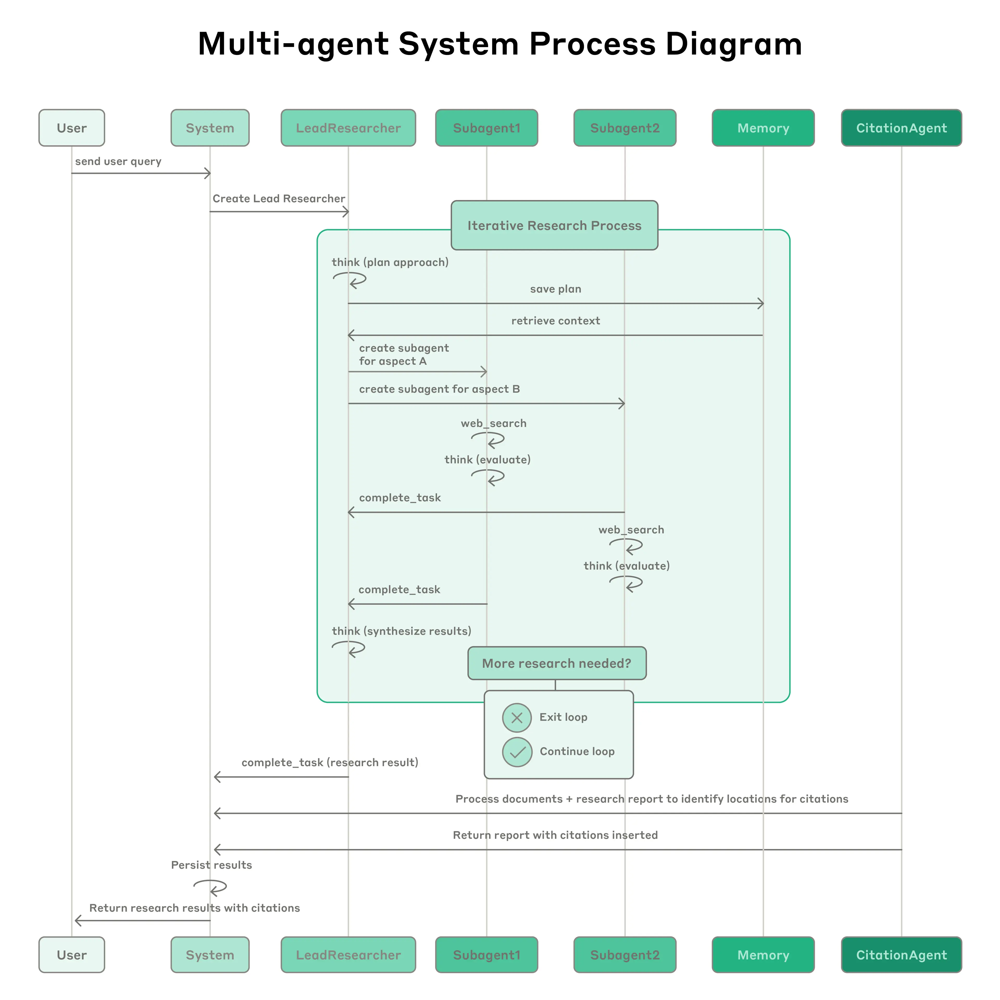

导语
当所有人还在卷模型参数、拼上下文长度时，Anthropic 已经悄悄换了一条赛道。他们的最新研究显示：多 Agent 系统比单 Agent 性能高出 90.2%。这不是实验室里的玩具，而是 Claude 背后真实的生产系统。
今天，我们揭秘这套"Orchestrator-Subagent"架构是如何工作的。
在 AI 领域，架构创新有时候比单纯堆模型能力更重要。
一、为什么"大力出奇迹"行不通了？
想象一下，你请了一个超级聪明的助手，让他帮你完成一个复杂的市场调研任务。你期待他像诸葛亮一样运筹帷幄，但实际情况往往是这样的：
注意力稀释（Attention Loss）
你把 100 份财报、50 篇行业报告、30 个网页链接都丢给他。虽然他的"记忆力"（上下文窗口）越来越大了，但信息越多，他越容易"丢三落四"。即使是天才也会被海量信息淹没。
串行效率极低
这位助手就像一个非常认真的学生：搜一个词→点开链接→读完→再搜下一个。这种"线性思考"在面对复杂课题时，耗时是以小时计的。
脆弱的规划能力
最致命的是，你让他同时负责"定计划"和"搬砖"。结果往往是：他在执行细节时忘了最初的目标，产生"路径漂移"。
这就是 Anthropic 团队在使用单 Agent 做深度调研时遇到的真实困境。他们发现：单纯堆模型能力、扩上下文窗口，已经遇到边际效应递减的瓶颈。
二、性能飙升 90.2% 的秘密
面对这些瓶颈，Anthropic 彻底改变架构思路——从"一个超级大脑"变成"一个高效团队"。
Anthropic 将这套架构抽象为两个核心角色：
Orchestrator（老板）
大脑，负责战略决策
老板不亲自去读网页、翻文档。它的工作是统筹全局、分配任务，维护一张全局的"项目进度表"。
Sub-agents（员工）
手脚，负责具体执行
每个员工只专注一个极其具体的任务。他们不需要操心全局，只需要把自己那块工作做好、做快、做准。

Orchestrator-Subagent 架构
三、OODA 循环：动态管理而非固定流程
这套架构最精妙的地方在于：它运行的不是预先写好的固定流程，而是 OODA 循环——就像老板管理项目时的自然 workflow：
| 阶段 | 动作 | 老板在做什么 |
|---|---|---|
| Observe 观察 | 查看当前项目进度、已收集的资料、员工提交的初步结果 | "我已经有了美国市场的数据，欧洲市场还是空白" |
| Orient 定位 | 分析信息是否足够回答问题，识别缺口，评估方向是否正确 | "欧洲数据缺失是关键瓶颈，需要重点突破" |
| Decide 决策 | 决定下一步动作：深入挖掘（Depth）还是拓展广度（Breadth） | "让 2 个员工分别去查德国和法国市场" |
| Act 执行 | 将任务分配给专员，调用具体工具获取新数据 | 创建 2 个子 Agent，分配任务 |
每一次循环，老板都会根据最新进展重新评估项目状态，调整工作重点。这不是机械执行，而是真正的"动态管理"。
四、典型工作流程
让我们走进 Anthropic 内部的调研系统，看看一次典型的多 Agent 协作是如何展开的：
拆解任务
老板不急着动手，而是先拆解成 5 个子任务：美国市场、中国市场、欧洲日韩、技术对比、趋势分析——再把计划写入笔记本（外部 Memory）防止忘了。
并行派活
瞬间创建 10 个员工，2 人一组并行开工。美国组查 NVIDIA/AMD，中国组查华为/寒武纪……所有人同时推进，而不是排队等。
自我检查
每个员工交活前必须自检：数据完整吗？来源可靠吗？避免把垃圾数据传给老板。
对账审核
老板汇总后，召唤 CitationAgent（对账员）：报告里的每句话，能不能在原文找到证据？创作和审核分离，确保每个结论都有据可查。

多 Agent 协作工作流程
五、Anthropic 踩过的 5 个坑
多 Agent 系统不是银弹，Anthropic 在建设这套系统时遇到了不少挑战：
坑 1：上下文截断导致"失忆"
每个 subagent 上下文是隔离的，调研任务通常涉及海量数据（如阅读数十份长文档），长周期的迭代会导致对话历史超过 20 万个 token 的限制。一旦发生截断，lead research 会产生"人设漂移"，彻底忘记最初的研究计划。
解法：
- 外部存储（Memory）： 系统将核心研究计划存储在外部 Memory 中，保证全局目标在任务中保持一致
- 每轮同步： lead research 在每一轮 OODA 循环开始时，都会从外部存储中读取计划
坑 2：工具描述不清，AI"瞎用"
多 agent 系统依赖大量工具（搜索、读取、提取）。工具调用失败往往不是因为模型能力弱，而是因为人类编写的工具描述存在歧义。
解法：
- AI 写说明书： 开发专门的 tool-testing agent，多次使用某个存在缺陷的工具，在失败中学习，随后重写该工具的描述文档。仅通过优化工具描述，任务处理的整体耗时就降低了 40%
- 交错思考： 在提示词中强制模型在调用工具前后进行显式思考
坑 3：路径随机，评估困难
多 agent 系统的路径是高度随机且发散的。同样的查询，第二次运行可能走完全不同的搜索路径，这让确定性的评估指标变得极难衡量。
解法：
- 模型辅助评估： 引入"裁判模型"，使用更高阶的模型作为自动评分员
- 小样本深度调研： 选取 20 个 最具代表性的真实案例进行测试，可揪出架构设计中 80% 的系统性缺陷
坑 4：成本指数级膨胀
多 Agent 系统可能为了简单问题盲目开启几十个 subAgent，导致 token 消耗呈指数级增长。
解法：
在提示词中嵌入规模自适应规则：
- 简单事实查询：1 个 subAgent，3-10 次工具调用
- 直接对比任务：2-4 个 subAgent，各 10-15 次调用
- 复杂研究：10+ 个 subAgent，明确划分职责
坑 5：信息碎片化，张冠李戴
多 Agent 并行处理后，信息极其碎片化，容易出现"结论与原始来源无法对应"的问题。
解法：
前文提到的 CitationAgent（对账员），专职负责引用核查，确保所有主张都有据可查。
六、什么时候该用多 Agent？三金标准
不是所有场景都值得上多 Agent。Anthropic 给出了三个关键判定点：
标准 1：任务可并行化
例如：你的任务可以拆成"搜日本市场"、"搜欧洲市场"这种互不干扰的子块。
标准 2：超越单次上下文
任务涉及的总信息量远超 20 万 token，单模型处理不过来时。
标准 3：需要动态闭环
任务不是一锤子买卖，需要根据"第一步搜到的结果"来决定"第二步搜什么"。
七、总结：从"大力出奇迹"到"巧劲破千斤"
Anthropic 的多 Agent 研究给我们最大的启发是：在 AI 领域，架构创新有时候比单纯堆模型能力更重要。
多 Agent 系统带来了更高的复杂度、更多的 token 消耗（约 15 倍于普通对话）、更复杂的调试难度。但对于那些高价值、可并行、需动态调整的任务，它可能是目前最优的解法。
如果你正在构建 AI Agent 系统，不妨问问自己：我是在招一个"万能超人"，还是在搭建一个"高效团队"？
答案可能决定了你的系统上限。
Anthropic 官方技术博客《How we built our multi-agent research system》